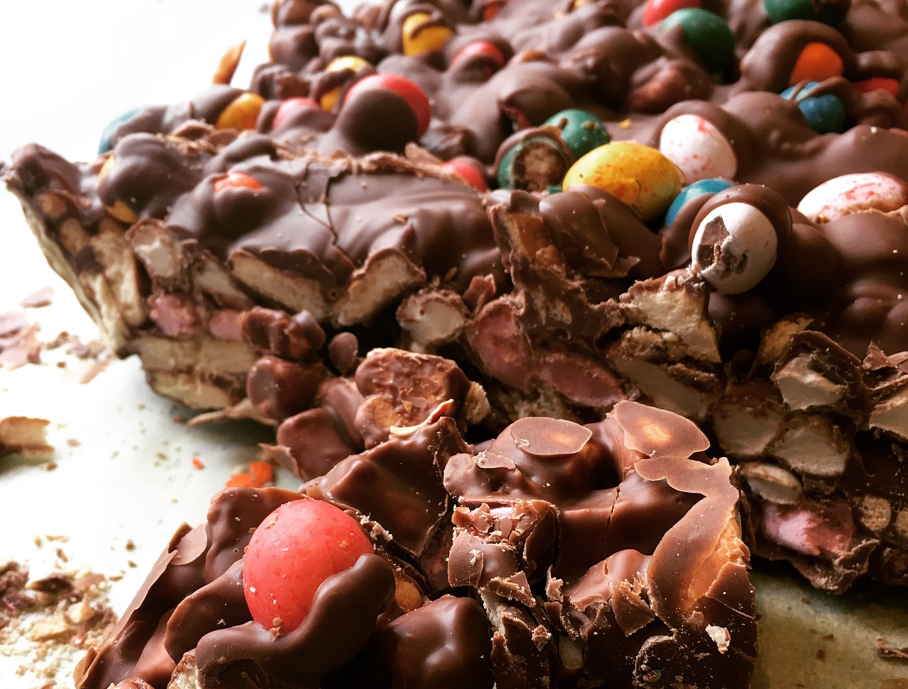

Mittaa 1 dl kermaa ja paloiteltu suklaa kattilaan. Kuumenna samalla sekoitellen, kunnes suklaa on sulanut. Nosta kattila levyltä. Anna jäähtyä. Voit nopeuttaa jäähdytystä nostamalla kattilan kylmään vesihauteeseen.
Vatkaa loppu kerma (2,3 dl) vaahdoksi.
Yhdistä jäähtynyt suklaaseos ja vaahto.
Lusikoi tai pursota mousse annosastioihin.
Peitä ja nosta jääkaappiin muutamaksi tunniksi tai yön yli.
Koristele.
ROCKY ROAD -PALAT:

AINEKSET:
200 g suklaata
20 g voita
Vaahtokarkkeja
Popkorneja
OHJEET:
Paloittele ja sulata suklaa miedolla lämmöllä voin kanssa. Sulattamisen voi tehdä liedellä tai vaihtoehtoisesti mikroaaltouunissa. Älä anna suklaan kiehua.
Pilkotarvittaessa vaahtokarkkeja pienemmiksi.
Sekoita ainekset yhteen leivinpaperilla vuoratulle pellille tai tarjoittimelle.
Anna jähmettyä jääkaapissa vähintään tunninajan. Leikkaa levy pienemmiksi paloiksi.
VINKKI:
Voit tehdä paloista omaan makuun sopivia muokkaamalla aineslistaa.
Popkornien sijasta voi esimerkiksi käyttää pähkinöitä.